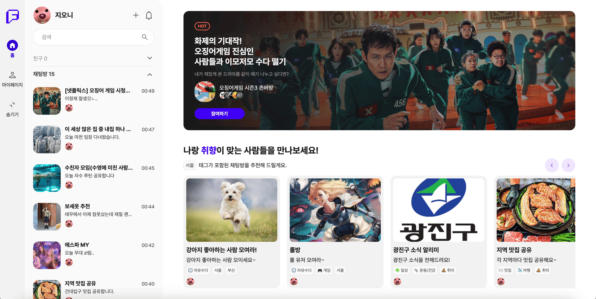

친구하자
2024.12 ~

👪 Members
- •프론트엔드 3명
- •백엔드 2명
- •디자이너 2명
📌 Summary
비슷한 관심사를 가진 사람들과 소통하고 친구를 추천받을 수 있는 실시간 채팅 및 커뮤니티 기반 웹 사이트
- •채팅 기능에서 아쉬운 점을 보완하고 개선하기 위해 해당 프로젝트에 참여
- •하나의 웹소켓으로 채팅방별 메시지 수신 핸들러를 효율적으로 처리하도록 설계
- •채팅방 친구 초대 기능에서 useTransition을 적용해 검색 시 UI가 멈추지 않도록 최적화
- •프론트엔드 팀장으로서 컨벤션 문서화와 팀 리딩을 맡아, 팀원들과 협력하여 프로젝트를 원활하게 진행
🤔 Background
- 이전에 채팅 기능을 구현한 경험이 있었지만, 비즈니스 로직과 UI 로직이 제대로 분리되지 않아 코드의 가독성과 유지보수성이 떨어지는 문제가 있었습니다. 이 문제를 해결하기 위해 보다 효율적인 구조를 고민하게 되었고, 이를 실현하고자 채팅 관련 프로젝트에 참여하게 되었습니다.
🔍 Meaning
•새로운 웹소켓 연결방식에 대한 고민
- 친구하자 프로젝트에서는 사이드바에서 참여한 채팅방 목록을 유지하면서, 각 채팅방의 새로운 메시지를 실시간으로 업데이트해야 했습니다.
- 위 문제를 해결하기 위해 하나의 웹소켓을 통해 입장한 채팅방과 참여 중인 채팅방의 메시지를 모두 수신하는 방식을 채택했습니다. 이 과정에서 각 채팅방의 메시지를 구분하여 적절히 처리할 수 있도록 웹소켓 메시지 이벤트가 발생할 때 구독된 모든 콜백 함수가 실행되는 구조를 설계했고, 입장한 채팅방과 참여 중인 채팅방의 메시지를 동시에 수신하고 처리할 수 있도록 구현했습니다.
•채팅방 친구 초대 시 닉네임 검색 최적화: useTransition을 활용한 UI 성능 개선
- 채팅방에서 닉네임을 검색해 친구를 초대할 때, 서버에서 키워드에 맞는 친구 데이터를 받아오는 과정에서 UI가 잠시 멈추는 문제가 발생했으며, 이를 해결하기 위해 useTransition을 적용하여 상태 업데이트를 비동기 처리함으로써 입력 지연 없이 부드럽게 동작하도록 개선하였습니다.
•실시간 알림 기능의 필요성 및 개선 방향
- 웹소켓을 활용해 실시간 알림 기능을 구현했지만, 현재 알림이 필요한 상황은 친구 요청과 채팅방 초대 두 가지 뿐이었습니다. 참여한 채팅방의 메세지는 사이드바에서 실시간으로 업데이트되었기 때문에 "알림이 실시간으로 필요할까?" 라는 생각이 들었습니다.
- 이에 따라 실시간 알림이 더 필요한 기능, 예를 들어 게시판 좋아요나 댓글 알림 등의 추가적인 알림 기능을 확장하는 방향으로 개선할 필요성을 느꼈고, 이를 고려한 고도화를 계획 중입니다.
•프로젝트 리딩 경험과 협업 개선 과정
- 프론트엔드 팀장으로서, 컨벤션을 문서화하고 팀을 리딩하는 역할을 맡았습니다. 초반에는 팀원들과의 의견 조율이나 프로젝트 진행 상황을 맞추는 데 어려움이 있었지만, 점차 팀원들과 협력이 잘 이루어져 프로젝트의 방향성을 잡고 원활하게 진행할 수 있었습니다.
👩🌾 Responsibilities
기여도 : 60%
- •소셜 로그인(구글, 네이버)
- •사이드 바(검색, 친구 및 참여중인 채팅방)
- •실시간 채팅(웹 소켓)
- •실시간 알림(웹 소켓)
- •CI/CD 구축: GitHub Actions와 Docker를 활용하여 AWS EC2에 자동 배포 환경 구성
🔨 Technology Stack(s)
- React
- TypeScript
- Vite
- React-query
- Recoil
- React-hook-form
- Styled Components